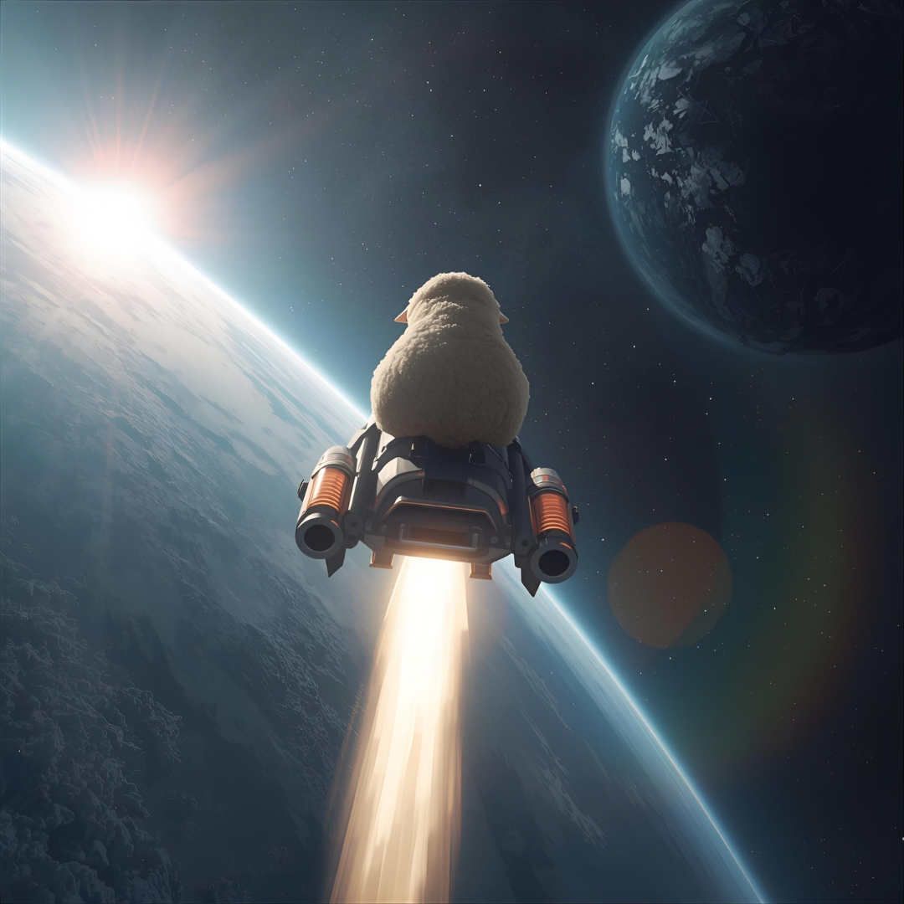

EWE
Exoplanetary Worlds Explorer
About EWE

EWE (Exoplanetary Worlds Explorer) is a tool that combines AI and astronomy to make the search for new worlds easier and clearer. Designed for the NASA Space Apps Challenge 2025, EWE processes raw space data cleaning, filling gaps, and ensuring quality, so it's ready for analysis. It extracts key details like transit depth and duration, orbital period, and signal strength. Using a NASA-trained model, EWE provides reliable estimates of whether a planet is present. With EWE, exoplanet discovery becomes accessible not only to scientists, but also to students and space enthusiasts everywhere.